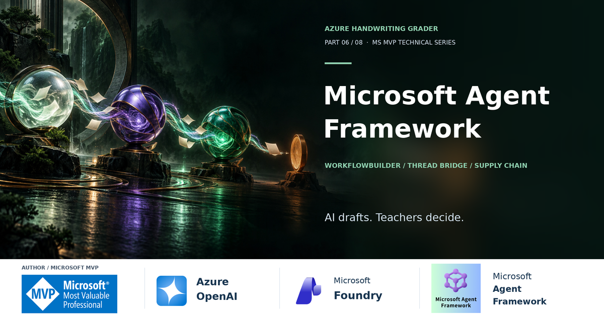

What Microsoft Agent Framework actually orchestrates in a grading application
Part 6 of 8 · For agent and application developers

An “agentic” architecture diagram can easily imply more autonomy than the code provides. This application uses real Microsoft Agent Framework Executors and a workflow, but it does not ask a group of autonomous agents to negotiate grades or grant approval.
The workflow is deliberately small: validate inputs, execute the existing grading engine, and return a draft location for human review. Pricing and review policy remain application responsibilities.
This article shows the actual code and the saved artifacts the grading engine produces. No framework event log was captured for the existing example, so those artifacts are not presented as proof of which orchestrator ran historically.
Step 1: State the workflow's contract
The workflow imports:
from agent_framework import Executor, WorkflowBuilder, WorkflowContext, handler
Its input is a grading request with the configured exam context captured by the builder. Its output is one path to generated grading artifacts.

Figure 1. Diagram of actual workflow structure, not a runtime event visualization.
The last box is particularly important. “Human review boundary” means the automated workflow stops without granting approval. It does not mean the Executor waits for a teacher response and persists that approval.
Step 2: Validate before executing
The first Executor's handler calls application validation:
class ValidateApproval(Executor):
@handler
async def process(self, request: str, ctx: WorkflowContext[str]) -> None:
approved_inputs(config, config_dir, config_path)
await ctx.send_message(request)
Output: the request is forwarded only if validation returns successfully. A failing validation stops this path before the grading Executor is invoked.
The framework provides orchestration primitives. The application supplies the meaning of “approved inputs,” including rubric/region checks. Adding an Executor does not automatically implement those policies.
Part 1's actual scan warning is related but belongs to scan checking; do not label it as a captured ValidateApproval event.
Step 3: Run the synchronous engine without blocking the event loop
The second Executor uses:
output = await asyncio.to_thread(
grade_function,
config, config_dir, config_path, model_config_path,
endpoint, api_version, summary,
mode=mode,
batch_concurrency=batch_concurrency,
)
await ctx.send_message(str(output))
This is a reformatted source excerpt. asyncio.to_thread bridges the existing synchronous grading function into the asynchronous handler. It does not transform each rubric rule into a separate agent or remove the engine's own concurrency and transport constraints.
The engine writes outputs such as:
grading/
manifest.json
results.json
review.xlsx
images/
telemetry/

Figure 2. Existing engine output: four scripts and twenty question-mark records. This is not a framework execution trace.
A practical benefit is reuse: direct Python orchestration and the framework path call the same engine, preserving the review/checkpoint model.
Step 4: Yield drafts without inventing human approval
The final Executor does this:
class RequireHumanReview(Executor):
@handler
async def process(self, output: str, ctx: WorkflowContext[Never, str]) -> None:
await ctx.yield_output(output)
Despite the class name, there is no human response wait in that handler. It yields the draft output path. Review and approval occur through separate application operations.
Suggested operator prompt
Run the approved grading workflow only after I confirm cost.
When it finishes, show the draft output location and flagged answers.
Do not approve scores, generate a delivery approval or send email.
This is a suggested assistant request, not the model prompt used to grade handwriting. The assistant must still respect the explicit consent and local approval gates.
Step 5: Connect the real Executors
The builder creates these edges:
return (
WorkflowBuilder(
start_executor=validate,
name="human-reviewed-azure-grading",
max_iterations=4,
)
.add_edge(validate, execute)
.add_edge(execute, review)
.build()
)
The wrapper runs the workflow, requires exactly one output, and converts that output back to Path.
The default CLI selects the framework path. --orchestrator python selects the direct implementation; workflow-grade forces the workflow route. These are application choices, not two different grading quality guarantees.
Evidence limitation: the saved manifest records grading mode, not a complete framework event history. This package includes the exact inspected workflow.py, but does not claim a new paid workflow run.
Technical walkthrough: the complete workflow and a real offline execution
A control message is not an LLM prompt
The wrapper passes the literal string "grade" to workflow.run(). That string
is a typed control message between Executors, not a system prompt asking a model
to invent a plan. The handwriting prompt is constructed inside the grading engine
as shown in Part 5. There is no hidden "three agents debate marks" prompt in this
workflow. The suggested operator prompt above tells the assistant which approved
operation to request; it does not grant approval or alter Executor authority.
The complete source factory
The imports are asyncio, Path, Never, the Framework types shown in Step 1,
and approved_inputs/grade_exam from the grading module. Here is the complete
factory, reformatted from the inspected source:
def build_grading_workflow(config, config_dir, config_path, model_config_path,
endpoint, api_version, summary, *, mode="batch",
batch_concurrency=3, grade_function=grade_exam):
class ValidateApproval(Executor):
@handler
async def process(self, request: str, ctx: WorkflowContext[str]) -> None:
approved_inputs(config, config_dir, config_path)
await ctx.send_message(request)
class ExecuteGrading(Executor):
@handler
async def process(self, request: str, ctx: WorkflowContext[str]) -> None:
output = await asyncio.to_thread(
grade_function, config, config_dir, config_path, model_config_path,
endpoint, api_version, summary,
mode=mode, batch_concurrency=batch_concurrency,
)
await ctx.send_message(str(output))
class RequireHumanReview(Executor):
@handler
async def process(self, output: str, ctx: WorkflowContext[Never, str]) -> None:
await ctx.yield_output(output)
validate = ValidateApproval(id="validate-human-approvals")
execute = ExecuteGrading(id="grade-approved-crops")
review = RequireHumanReview(id="await-human-score-review")
return (
WorkflowBuilder(
start_executor=validate, name="human-reviewed-azure-grading",
max_iterations=4,
)
.add_edge(validate, execute)
.add_edge(execute, review)
.build()
)
The nested classes capture configuration from the factory. Typed handlers forward
strings along explicit edges. asyncio.to_thread() runs the synchronous engine
without blocking the handler's event loop; question-level concurrency still
belongs to that engine. max_iterations=4 is a workflow bound, not a count of
billable grading requests.
The terminal handler uses WorkflowContext[Never, str]: it yields a string output
and does not send another workflow message. The wrapper makes the terminal
contract concrete:
def run_grading_workflow(*args, **kwargs):
async def run():
workflow = build_grading_workflow(*args, **kwargs)
events = await workflow.run("grade")
outputs = events.get_outputs()
if len(outputs) != 1:
raise ValueError("Grading workflow did not produce exactly one output")
return Path(outputs[0])
return asyncio.run(run())
An exception from validation prevents forwarding the control message. A successful engine returns a path, not an approval. The exactly-one-output check catches an unexpected terminal result; it does not establish educational correctness.
Run the real Framework without sending any student data
To make the sequence observable, we ran the following offline synthetic smoke test using the installed locked Framework. It replaces validation with a test stub and supplies a local grading stub; it is not a way to bypass approvals for a real exam. The Azure client constructor is explicitly forbidden in the test. No original exam, model configuration or grading output is opened or changed.
from pathlib import Path
from tempfile import TemporaryDirectory
from unittest.mock import patch
from handwriting_grader.workflow import run_grading_workflow
order = []
def synthetic_validation(*args):
order.append("validate")
def grading_stub(*args, **kwargs):
order.append("grade_stub")
return draft
with TemporaryDirectory() as directory:
root = Path(directory)
draft = root / "draft"
draft.mkdir()
with (
patch("handwriting_grader.workflow.approved_inputs", side_effect=synthetic_validation) as validation,
patch("handwriting_grader.grading.AzureClient",
side_effect=AssertionError("Azure clients are forbidden in this offline example")) as azure,
):
output = run_grading_workflow(
{}, root, root / "synthetic-exam.yaml", root / "synthetic-models.yaml",
"https://synthetic.openai.azure.com", "v1", {"students": 4},
grade_function=grading_stub,
)
assert order == ["validate", "grade_stub"] and output == draft
azure.assert_not_called()
print("Execution order:", " -> ".join(order))
print("Validation calls:", validation.call_count)
print("Workflow output:", output.name)
print("Azure clients constructed:", azure.call_count)
Run the included copy from the grader checkout's locked environment:
uv run --frozen python docs/blog-series/snippets/offline-framework-smoke.py
Actual captured output from this new offline exercise:
Execution order: validate -> grade_stub
Validation calls: 1
Workflow output: draft
Azure clients constructed: 0
The complete script is included in snippets/offline-framework-smoke.py, and the
captured output in observed/offline-framework-smoke.txt. The real Framework
executed the typed sequence and terminal output contract. The stub created an
empty synthetic draft directory; it did not grade four students. This is
instrumented offline evidence, not an original-exam Framework event log.
Step 6: Review the thing the workflow cannot approve
The saved workbook includes flagged answers with manual-review fields. The current read-only review diagnostic reports no discrepancies while explicitly reminding the operator that human review and approval remain required.

Figure 3. Actual saved review records, not evidence that the final Executor granted approval.
Deployment hygiene matters too. Use the reviewed lockfile and consult current advisories before changing framework dependencies. A historical pre-incident pin is not a permanent safety certification.
The architectural lesson is straightforward: use the framework to make sequencing visible, but keep correctness, consent, pricing and release rules explicit in application code. A modest workflow that accurately describes its authority is preferable to a spectacular diagram that overstates it.
Next: pricing and data boundaries before AI calls.
Reproduce this article's AI banner: full prompt, code and output
The banner is a separate illustration task, not an image of a running grader or evidence that an assessment succeeded. Its article title, description, visual metaphor, palette and composition are all in the complete actual submitted prompt below. No reference images or official logos were sent in this request.
Stage A: the actual Azure image prompt
Create a visually arresting premium editorial cover illustration for a Microsoft technical blog, not a slide, diagram or screenshot.
Article title: What Microsoft Agent Framework actually orchestrates in a grading application.
Description: A deliberately small workflow has three Executors: validate inputs, execute the grading engine, and return a draft artifact location. Human approval remains outside that workflow; agents do not negotiate or approve grades.
Creative concept: THE THREE-PART ORCHESTRA. On the LEFT, exactly three dominant sculptural luminous hubs are linked by flowing braided fiber-optic ribbons, like a beautifully choreographed kinetic installation. The hubs are distinct in material: frosted glass, polished violet metal and luminous emerald ceramic. Abstract paper fragments flow between them. The final ribbon terminates at a clearly separate amber stop marker, leaving an intentional gap before it rather than flowing onward indefinitely. Deep forest-green and near-black atmosphere, brilliant emerald light, ultraviolet accents and very subtle copper reflections.
Sophisticated cinematic spatial design, energetic but uncluttered. Not a network map, swarm of tiny nodes, robot group, autonomous-agent negotiation or logo recreation. No diagrams or interface cards. The three large hubs must be visually countable and feel engineered, not random.
Composition: the three hubs occupy the LEFT 56 percent; leave the RIGHT 42 percent dark and quiet for large typography added later. Keep the three hubs, ribbons and stop marker inside the central horizontal band of a 1536x1024 canvas, approximately y=190 to y=830, for a wide 1200x515 crop. Full-bleed, no borders.
No titles, letters, numbers, logos, badges, watermarks, code, interfaces or fabricated framework traces. This is an editorial metaphor, not runtime evidence. Prioritize rhythm, dramatic light, sculptural distinction and memorable color.
This prompt's retained source is branding/prompts/06.txt. Asking for no
rendered words leaves typography to local code; the quiet side reserves space
for the headline. The image-size/crop instructions guide composition but do not
guarantee the model obeys every visual constraint, so the result was inspected.
Stage B: preview and the real API boundary
Use the independent image-generation repository's own environment and a newly reviewed private Azure configuration. The following command is an offline preview example, not a paid request executed while rebuilding this article:
"/path/to/azure-image-generation-skills/.venv/bin/azure-image" \
--model-config /private/image.config.yaml \
--prompt-file "/path/to/azure-handwriting-grader-skills/docs/blog-series/branding/prompts/06.txt" \
--output-dir /private/new-banner-part-06
Paid execution adds --confirm-cost only after explicit approval for one request.
The attempt directory must be new. Pricing is checked before SDK construction
and again at this actual source method from the independent tool:
def generate(self, prompt):
self.verifier.verify()
return self.sdk.with_options(max_retries=0).images.generate(
model=self.settings.model, prompt=prompt, size=IMAGE_SIZE,
quality=IMAGE_QUALITY, n=1,
)
IMAGE_SIZE is 1536x1024 and IMAGE_QUALITY is auto. n=1 requests one
image; SDK and per-call retries are disabled. The SDK returns inline base64
image data. The tool decodes it, verifies PNG format and exact dimensions, saves
the original and keeps private usage/price journals. The published method
excerpt is from
image-tool commit ee6c616;
it is not a standalone script and is not installed as part of the grader.
Observed output for this article: one successful text-to-image request using
gpt-image-2.5-sunburst, with estimated cost US$0.012155.
This is historical usage evidence, not a guaranteed future quote or an invoice.
Banner stage B output. A metadata-free JPEG publication derivative of the actual 1536 x 1024 generated PNG, before local typography and logos; not a fabricated application screenshot.
Stage C: preserve the scene, then add exact words and retained brand assets
The publication builder creates a blurred background extension and fits the complete generated scene without stretching it. Its relevant Pillow excerpt is:
full_scene = ImageOps.contain(artwork, hero.size, Image.Resampling.LANCZOS)
hero.paste(full_scene, (x, 0), mask)
hero is the upper banner canvas, x anchors the scene opposite the headline,
and mask feathers the quiet edge into the background. The builder varies
left/right placement and light/dark text by article. ImageDraw.text() writes
the exact headline; the four retained brand assets are resized proportionally
and composited into a separate strip. AI is not asked to redraw those marks.
Final output: the 1200 x 630 PNG shown at the top,
plus a 2400 x 1260 JPEG layout master. The larger master upscales layout and
artwork; it is not newly generated high-resolution detail. Original PNG and
submitted-prompt hashes are retained in branding/artwork-provenance.json.
Local composition source and
brand-source/permission caveats are included.

Rebuilding Markdown/HTML, JPEG derivatives and banners is local work. It does not regenerate artwork, refresh prices or authorize any new paid operation.
Implementation reference: complete workflow source at the inspected revision.